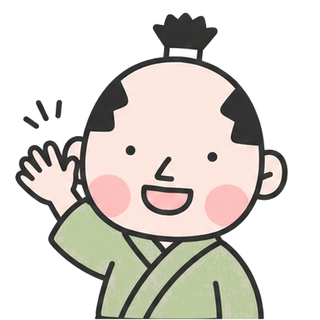
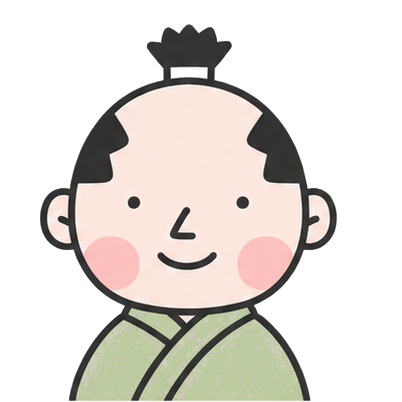
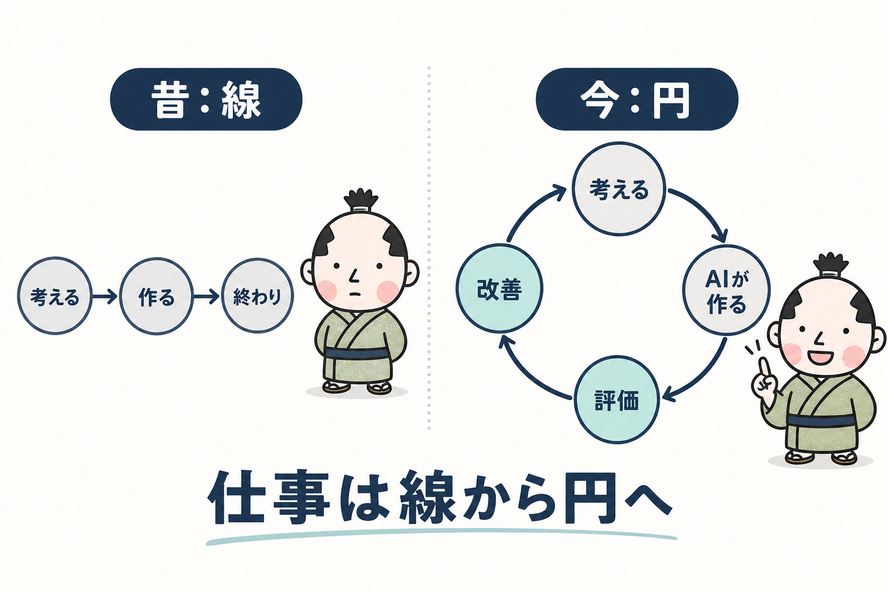
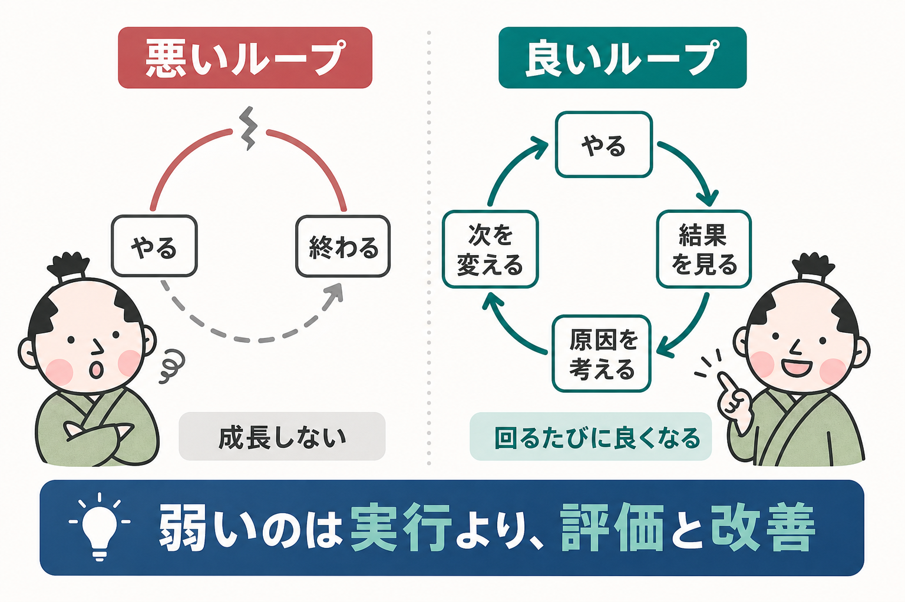
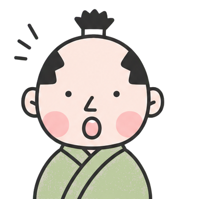
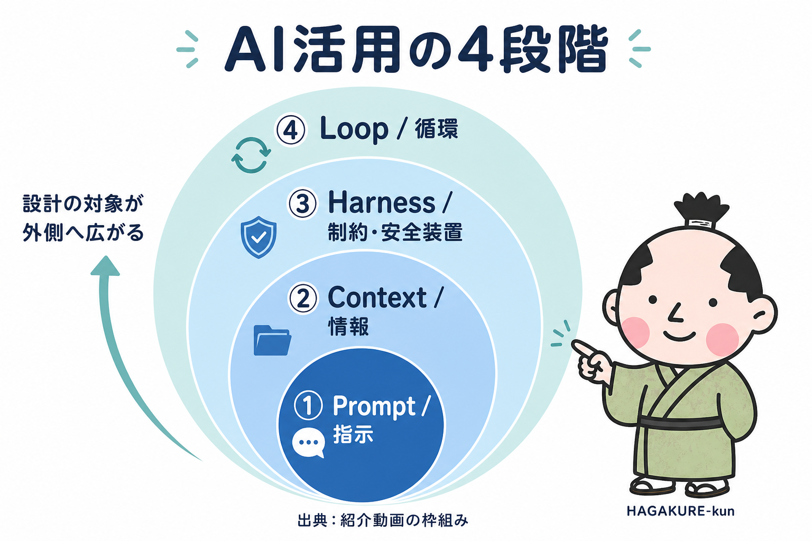
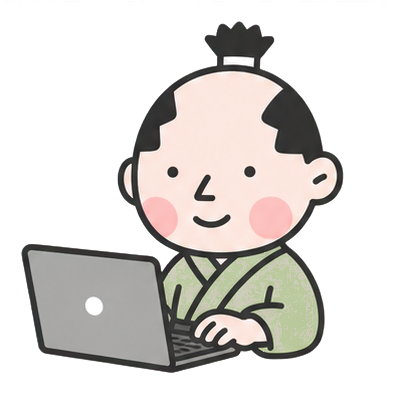

HAGAKUREプログラミング塾 ／ 2026年8月勉強会
ループエンジニアリング入門
AI時代の仕事は「作る」より「回す」
良いプロンプトを書く人になるのではなく、
良いループを設計する人になる

OPENING
今日のゴール
- 「AIに頼む人」から「ループを設計する人」へ視点を上げる
- 前半は考え方、後半は Cursor＋Slack 題材のデモ
- 手を動かさなくてもOK／途中で口を挟んでOK
- デモは時間内に行けるところまでで十分
まずは「見て、評価して、次を変える」ところから。

ループの中で、評価と改善を自分で回す
慣れたら、少しずつ監督側へ移っていく
QUESTION
最初の問い
あなたはAIを使っていますか？
それとも、AIに仕事を渡し続けていますか？
「使う」と「回し続ける」は、少し違います。

WHY LOOP
なぜ今「ループ」なのか

EXAMPLES
身近にも、職場にもループがある
作る → 食べる → 感想 → レシピ変更 → また作る
AIに手伝ってもらう → 人が確認 → 指摘を次の依頼へ反映
書く → 公開 → 反応を見る → 次の書き方を変える
GOOD / BAD
良いループと悪いループ

INSIGHT
AIでも、評価がないとガチャになる
- 多くの人が弱いのは「実行」ではなく「評価」と「改善」
- AIに頼んでも、チェックがなければ当たり待ち
- 「なんとなく良さそう」で終わると、次に活きない
結果をどうチェックしていますか？

FRAMEWORK
AI活用の4段階

① PROMPT
Prompt：指示の設計
どう頼めば良い回答が出るか
いちばん馴染みのある段階
- 悪いわけではない
- 問題は「AI活用＝プロンプト」で思考が止まってしまうこと
次の外側（Context）を見に行く。
② CONTEXT
Context：情報の設計
毎回ゼロから説明することになりやすい
例：対象は塾生初学者。丁寧だが堅すぎない。前回指摘は〇〇
- 頼み方より「何を知っている必要があるか」
- 毎回同じ説明を貼っている人は、Contextが毎回消えている
③ HARNESS
Harness：お願いではなく仕組み
Prompt（お願い）
「必ずテストしてください」
守る保証がない
Harness（仕組み）
「テスト合格しないと次へ進めない」
守らせる条件を先に置く
守らせる条件を先に置く。
④ LOOP
Loop：回し続ける設計
- 毎回ゼロから頼まない
- 前回の結果・反省を次に渡す
- 「1回うまくいった」より「次も再現できる」
今回は完全自動化まで行かない。
今日の練習は Human in the Loop の最小形。

HUMAN POSITION
In the Loop と On the Loop
Human in the Loop
ループの中で毎回見る・直す
Chatに頼む → 見る → 直させる
考え方が身につく／安全
Human on the Loop
ループの外で監督する
普段はAIが回り、おかしい時だけ介入
人がボトルネックになりにくい
選手として回し方を覚える。
DON'TS
べからず集（日常AI向け）
| べからず | なぜ？ | 次に考えること |
|---|---|---|
| 神プロンプトを作る | 指示だけ最適化している | Context |
| 毎回すべて説明する | 情報が毎回消える | Contextの再利用 |
| 「守って」とお願いするだけ | 保証がない | Harness |
| 毎回「次これ」と言う | 人がボトルネック | Loop |
| 全部AIに任せる | 人しか持たない情報がある | まずは In the Loop |
いちばん当てはまる「べからず」はどれ？
WORK（個人）
自分の仕事をループに分解する
紙・メモでOK。全体共有はしません（希望者のみ任意）。
DEMO
後半：思想を実装で見てみる
- 題材：Slack コミュニケーション品質改善ループ
- 処罰・監視ではなく「問題候補の発見と改善」
- 見るだけでOK／途中で止まってもOK
- 今日は人間確認を残す（In the Loop）
「なぜプロンプトだけでは足りないか」に気づくこと。

DEMO FLOW
デモで踏む段階
| 段階 | その場でやること | 学べること |
|---|---|---|
| Prompt | 投稿を貼って判定 | 単発でも動く |
| Context | 例外ルールを渡す | 判断材料が要る |
| Harness | 取得範囲・人間確認を決める | お願いではなく仕組み |
| Loop | 取得→判定→要確認→レビュー | 回し続ける設計 |
優先順位の前から進み、時間になったら途中でもまとめへ。
SUMMARY
持ち帰る3点
仕事は作って終わりではなく、回して良くする
Prompt → Context → Harness → Loop
依頼 → 評価 → 次に反映
でも今日覚えるのは Human in the Loop。
CLOSING